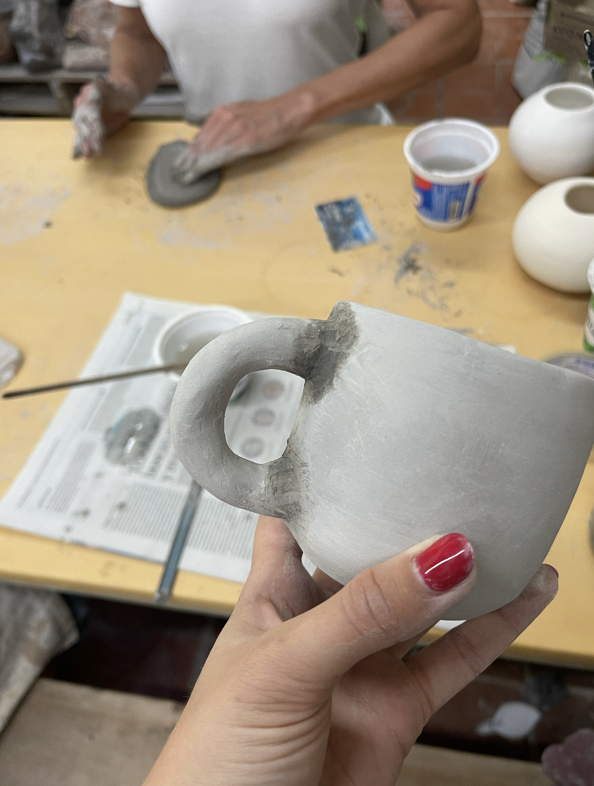

Ya hace un par de años que mucha gente arranco con este hobbie y en 2024 arranqué a ir a un taller de cerámica. Ahi entendí porqué se puso de moda

Arrancar con un taller de cerámica tiene muchisimos beneficios. Principalmente, trabajar con las manos ayuda mucho a reducir el estres. El trabajar con barro te obliga a estar presente y ayuda a disminuir las distracciones. Es un muy lindo espacio para crear regalos para seres queridos que tiene mucho valor el hecho de que sea creado a mano. También, al ser un taller, te lleva a conocer personas nuevas que estan ahí por el mismo motivo que uno.